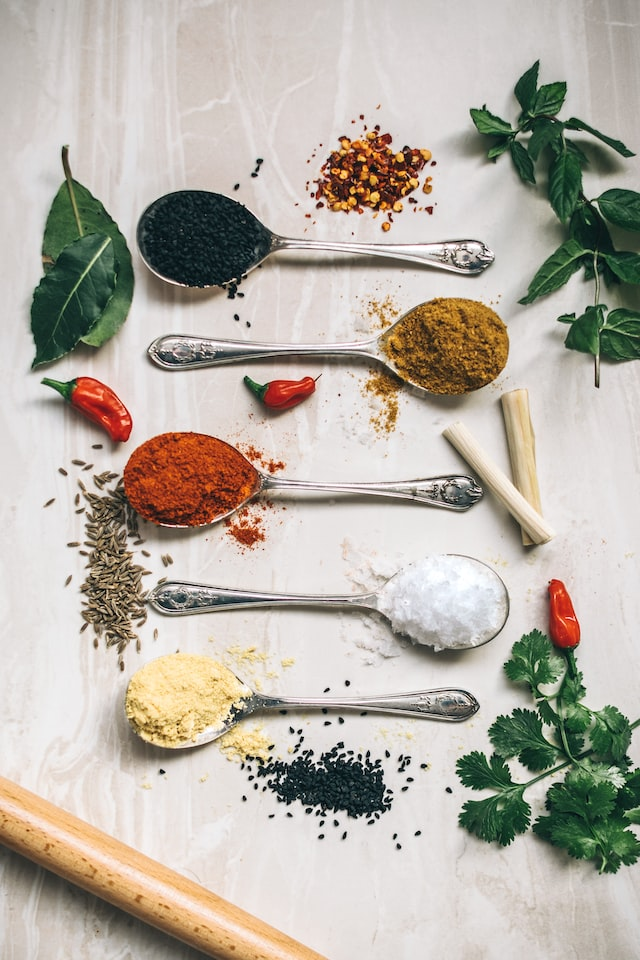

The earliest known written recipes date to 1730 BC and were recorded on cuneiform tablets found in Mesopotamia.
Other early written recipes date from approximately 1600 BC and come from an Akkadian tablet from southern Babylonia.
There are also works in ancient Egyptian hieroglyphs depicting the preparation of food.
Many ancient Greek recipes are known. Mithaecus's cookbook was an early one, but most of it has been lost; Athenaeus quotes one short recipe in his Deipnosophistae. Athenaeus mentions many other cookbooks, all of them lost.
Roman recipes are known starting in the 2nd century BCE with Cato the Elder's De Agri Cultura. Many authors of this period described eastern Mediterranean cooking in Greek and in Latin. Some Punic recipes are known in Greek and Latin translation
